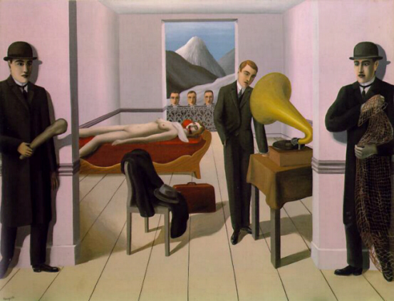

Una delle origini principali di questo dipinto fu l'interesse di Magritte per i film ed i romanzi d'orrore che, nel caso del ciclo di Fantomas, fu vero entusiasmo. In particolare il dipinto si ispira ad una scena del film Fantomas di Louis Feuillade del 1913. Questa passione fu condivisa pure da altri esponenti del movimento surrealista come Max Ernst.